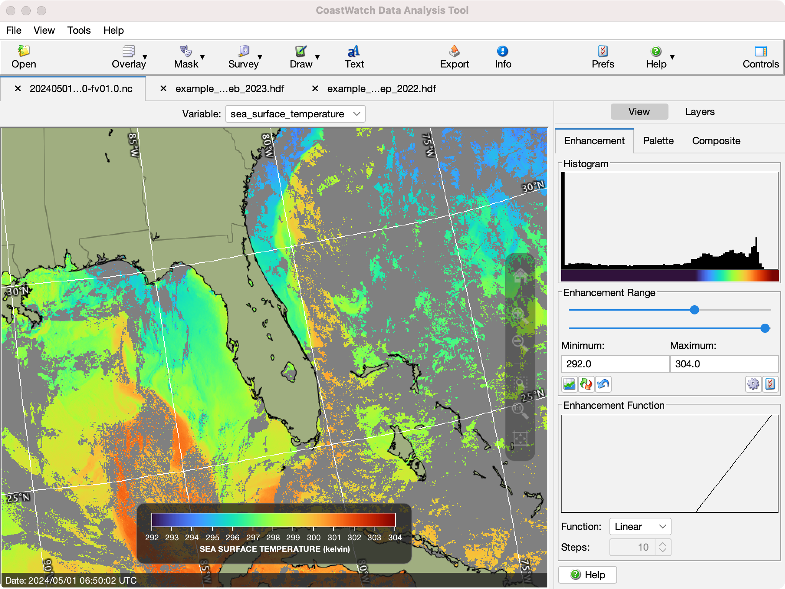

CoastWatch Data Analysis Tool Help: Overview
The CoastWatch Data Analysis Tool (CDAT) is a part of the
CoastWatch Software Library and Utilities package. CDAT allows
you to view satellite data files in CoastWatch HDF (.hdf), NetCDF 3/4 with CF
metadata and other formats, create data plots,
perform data surveys, export data to other formats, and so on. The
following figure shows the main components of the CDAT window:

The components are as follows (starting from the top):
- Menu bar
- Access to file and view operations, tools, preferences, and the help
system.
- Tool bar
- Buttons for common operations and to add overlays, surveys, and
annotations.
- File tabs
- Shows the currently open data file names, and allows you
to select or close files (click the x symbol).
- Variable selector
- Shows the currently active variable in the data file.
Choose another variable by clicking the button and picking a new variable from
the list.
- Data view
- The main data view showing the variable data, color scale, view
zoom controls, and the mouse cursor tracking bar (at the bottom).
- Control tabs
- On the right of the data view — access to the data view control
panels for the view: enhancement, palette, composite, and for layers:
overlays, surveys, annotations.
The following help sections contain more details on using
CDAT:
Basic data display
Data analysis
Other functions